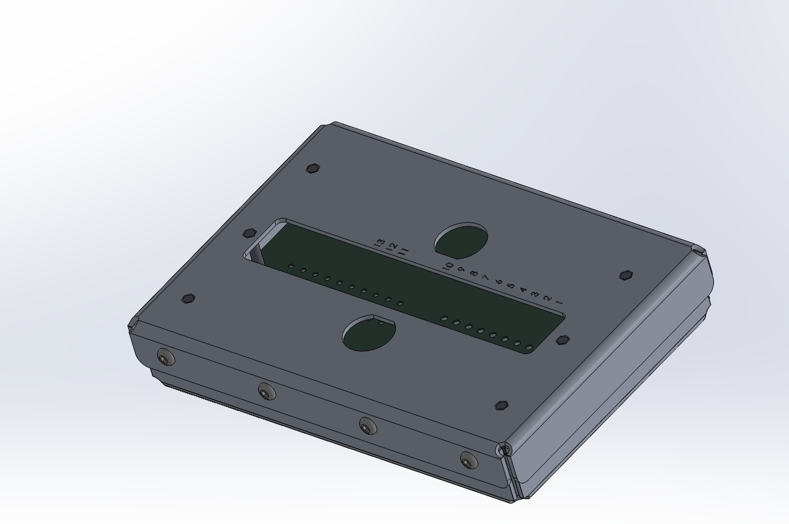
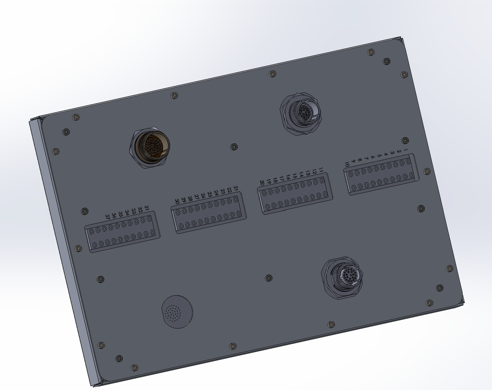

Sheet-metal revisions
Used SolidWorks sheet-metal features to correct bend radii, add bend cutouts, and prepare the enclosure geometry for fabrication.
Project 08
Turning incomplete client CAD into manufacturable sheet-metal junction boxes for a personal eVTOL aircraft company, with finished assemblies, technical drawings, and a complete bill of materials.

I received the junction-box CAD files from a personal eVTOL aircraft company and was initially told that the project only required technical drawings. Once I reviewed the models, I realized that the designs were not finished. The bend radii were too small for the sheet-metal thickness, several required cutouts and port labels were missing, some bolt holes were incorrectly sized, and the assemblies had not been completed with hardware.
Used SolidWorks sheet-metal features to correct bend radii, add bend cutouts, and prepare the enclosure geometry for fabrication.
Added missing openings, corrected hole sizes, and completed the assemblies with fastening hardware.
Created the drawings, subassembly documentation, and bill of materials needed for production.
I worked through the unfinished details using SolidWorks sheet-metal features, adding bend cutouts and deciding how each enclosure would be assembled and fastened. I selected appropriate standoffs, threaded inserts, and other hardware for each design, added the required port labels, and verified the openings and mounting features against the intended components.

The client’s unfinished design specified 6061 aluminum, but the required bend radii were too tight for that material and sheet thickness. After reviewing the issue with a senior engineer, we recommended 5052 aluminum as a better fit for the forming requirements. The material change was then confirmed with the client.
After completing the CAD, I produced technical drawings for eight individual sheet-metal parts: four covers and four bases. I also created drawings for five metal subassemblies and built a complete bill of materials. The BOM defined the required fastening hardware, which I sourced from McMaster-Carr.
The final package gave the client completed assemblies and the manufacturing information needed to fabricate and assemble the junction boxes.